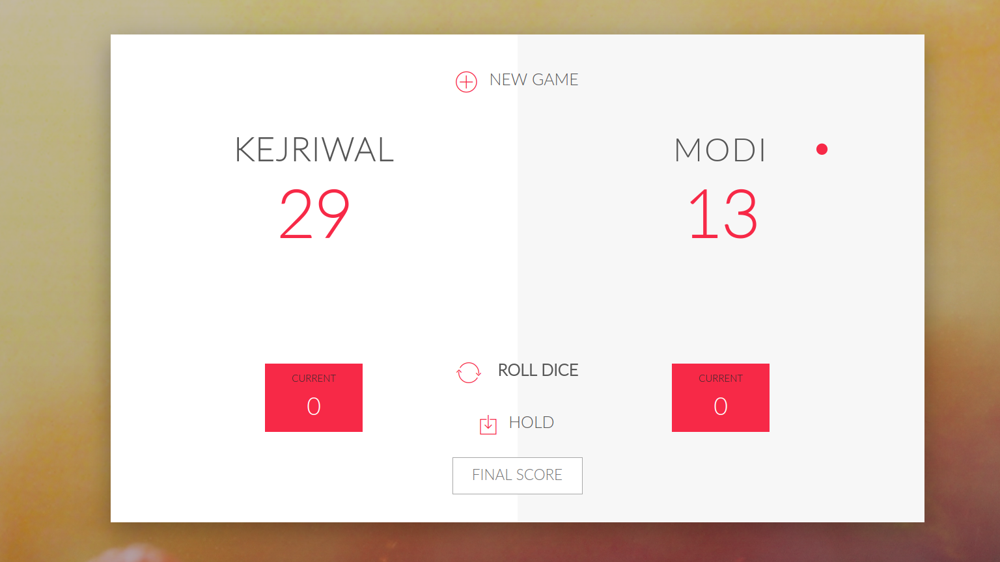
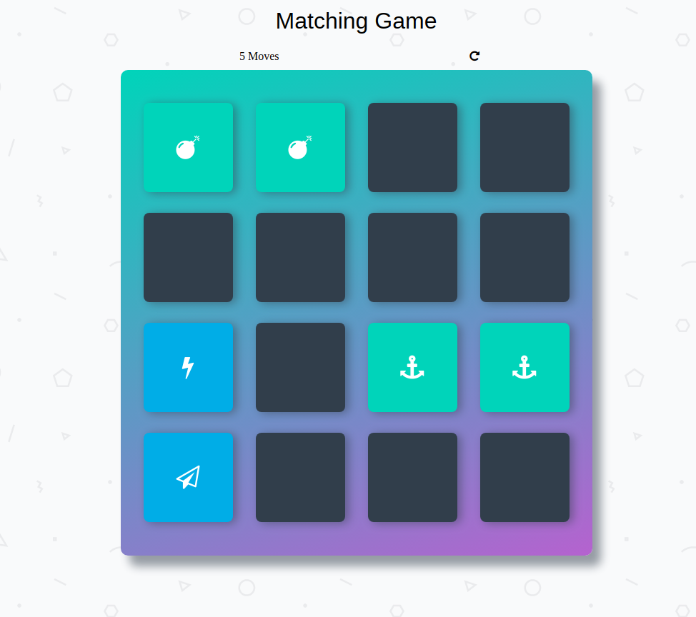

-
Dicey Luckmore_vertDicey Luckclose
How interesting learning becomes when you've such an addictive game to look forward to!
Read the rules carefully, it's Probability vs Luck :)
I learned how JavaScript manipulates the DOM elements, cool CSS fade-out animation, HTML form validation, UI/UX basics, game-play/over conditions
Check out the code? -
 Minesweepermore_vertMini Minesweeperclose
Minesweepermore_vertMini Minesweeperclose
In this challenge, I attempt to code the classic game Minesweeper in JavaScript with the p5.js library. I followed The Coding Train challenge#71 on YouTube for this game (that guy's the so damn cool!).
Things learnt: OOP (Javascript), Code refactoring, Canvas (p5.js), Functions (to reuse the code)
Check out the code? -
 Unbeatable Tic-Tac-Toemore_vertUnbeatable TicTacToeclose
Unbeatable Tic-Tac-Toemore_vertUnbeatable TicTacToeclose
I struggled for hours scrolling through tutorials, watching videos, and banging my head on the desk trying to build an unbeatable Tic Tac Toe game with a reliable Artificial Intelligence. But looking at the finished project, it seems the hustle was worth every second. It's so much using the power of Recursion in making the move look like AI!
Source:
Check out the code? -
Memory Champmore_vertMemory Champclose
A fun game to flex your brain muscles and match 2 cards with same image.
Behind the hood: an openedCards array to store current cards and compare if these are matched (will always have a length of 2). A matchedCards array to check if all cards have been opened (for gamover conditions).
Check out the code?